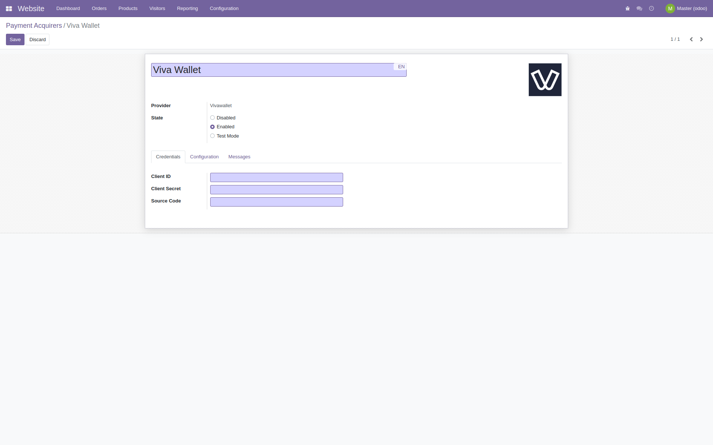
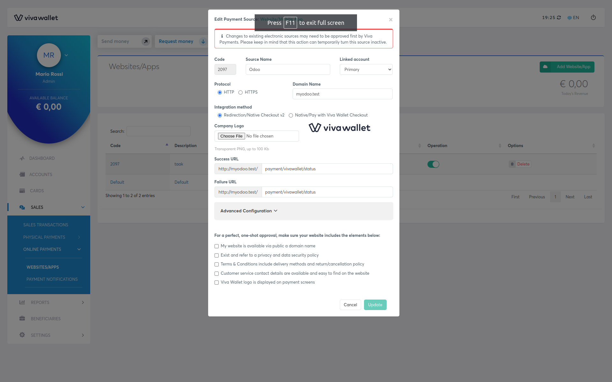
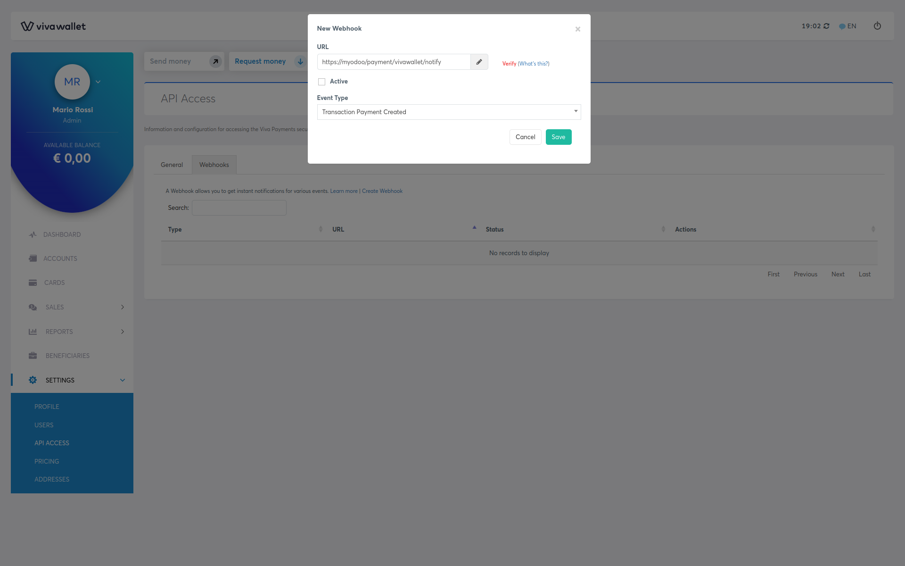

<div class="container">
    <div class="oe_styling_v8">
        <h2>Description</h2>
        <p>This module installs Viva Wallet as a payment acquirer.</p>

        <h2>Usage</h2>
        <p>
            Once you finished your installation, you must activate Viva Wallet in payment acquirers menu and configure it with
            your API credentials.
        </p>
        <div style="background-color:#999; display:inline-block">
            
        </div>

        <br /><br />

        <h2>Smart Checkout</h2>
        <p>
            Obtain your Viva Wallet Smart Checkout <b>Client ID</b> and <b>Client Secret</b> from your Viva Wallet account.<br />
            Copy <b>Code</b> field from Viva and paste into Odoo Payment Acquirer configuration.<br />
            <a href="https://developer.vivawallet.com/tutorials/vw-e-banking/settings/api-access/">Official Viva Wallet documentation</a> may be useful for this step.
        </p>
        <div style="background-color:#999; display:inline-block">
            
        </div>

        <br /><br />

        <h2>Online Payment Source</h2>
        <p>
            Configure checkout redirection to your odoo website in Viva Wallet.<br />
            <b>Make sure</b> return urls (<i>success, failure</i>) are set to <code>payment/vivawallet/status</code>.
        </p>
        <div style="background-color:#999; display:inline-block">
            
        </div>

        <br /><br />

        <h2>Webhooks</h2>
        <p>
            Make sure your webhooks are properly set.<br />
            This module uses <code>payment/vivawallet/webhook</code> as endpoint.<br />
            Otherwise, your orders will always stay pending and never validated.<br />

            <a href="https://developer.vivawallet.com/tutorials/vw-e-banking/settings/api-access/">Official Viva Wallet documentation</a> may be useful for this step.
        </p>

        <div style="display:inline-block">
            
            
        </div>

        <br /><br />

        <h2>Supported Currencies and Locales</h2>
        <p>You can refer to <a href="https://help.vivawallet.com/en/articles/5126158-in-which-currencies-can-i-accept-payments-via-my-online-store">Viva Wallet FAQ</a> to discover how currencies and locales works.</p>

        <hr>
        <h4 style="color:green">You're done!</h4>
        <p>If you encounter any problem with this module please contact us on the following email address: alessandro@gessa.net.</p>
        <br>
    </div>
</div>